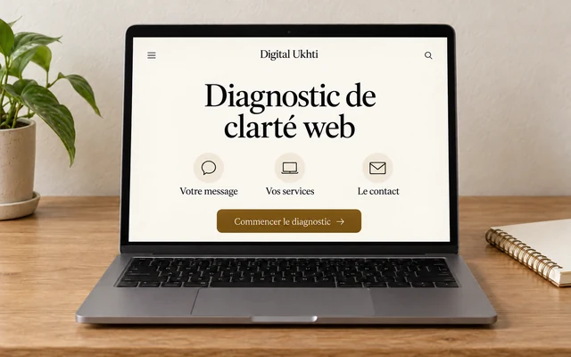
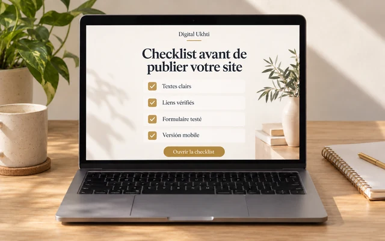
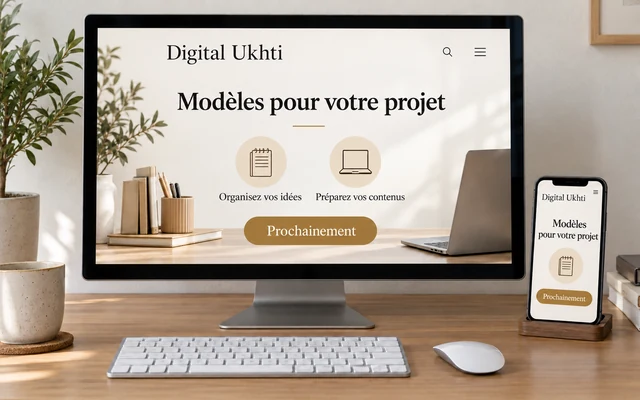
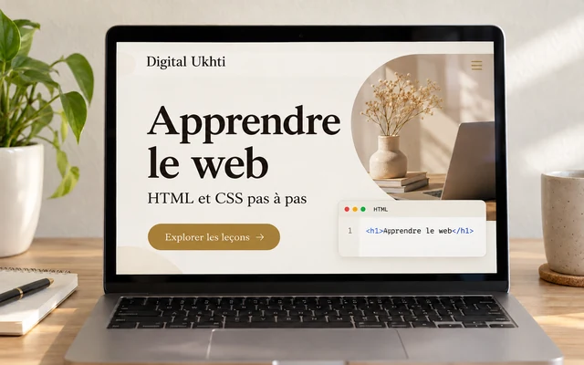

Diagnostic de clarté web
Une autoévaluation gratuite pour vérifier votre message, vos services et votre contact.
Commencer le diagnostic →RESSOURCES GRATUITES
Des guides simples et pratiques pour vous aider à apprendre, organiser vos idées et construire votre présence digitale pas à pas.

Une autoévaluation gratuite pour vérifier votre message, vos services et votre contact.
Commencer le diagnostic →
Vérifiez les éléments essentiels avant de publier votre site. La checklist peut être imprimée ou enregistrée en PDF.
Ouvrir la checklist gratuite →
Découvrez les modèles prévus pour organiser votre projet et vos contenus. Prochainement.
Voir les modèles à venir →
Des leçons pour comprendre et construire un site web pas à pas.
Explorer les leçons →